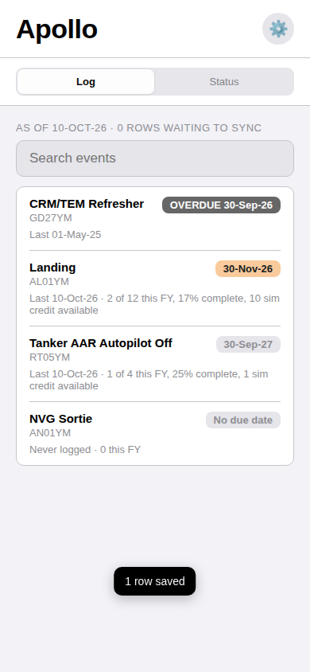
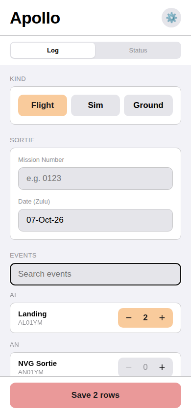
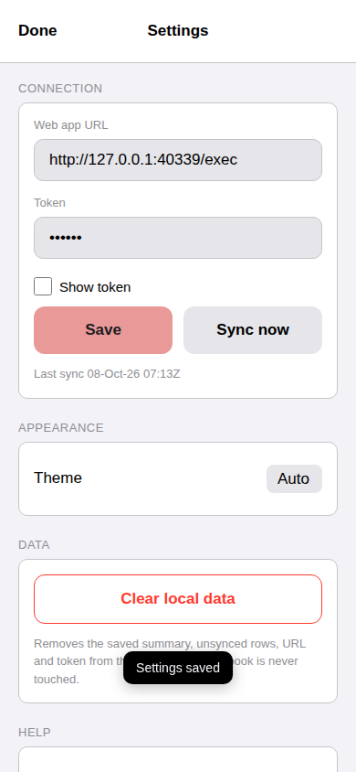

Setup guide
Apollo is a personal KC-135 aircrew training tracker. You tap what you did on a sortie, in the sim or in a ground class, and the rows land in a Google Sheet that you own. A small script inside that sheet works out currency, due dates and volume for every event in your column of the RTM and writes an Individual Training Summary. The app shows you that summary, overdue first.
Three things to know before you start:
Eight steps. Steps 2 to 7 happen inside Google Sheets and the Apps Script editor, easiest on a computer; step 8 is on the device you will log from.
The template holds the four tabs with their headers, the UTC time zone, and the RTM events for the MP / FTL A column. Google will ask you to make a copy; the copy is yours and lands in your Drive.
If your RTM column differs, edit the two config tabs in your copy afterwards. Keep the header row and the tab names exactly as they are; the script finds everything by those names.
In your copy, choose Extensions → Apps Script. A project opens with one file, Code.gs, holding a stub function.
Click into Code.gs, select everything, delete it, and paste the contents of Code.js from the code section below. Save with Ctrl/Cmd+S.
Click the + next to Files, choose Script, and name it rules. Delete the stub it contains and paste the contents of rules.js from below. Save.
Click the gear (Project Settings) in the left bar, scroll to Script Properties, and click Add script property. Property name APOLLO_TOKEN. Value: a secret of your own made of lowercase letters and digits only. Eight or more characters is plenty; it guards a training log, not a bank account. Click Save script properties.
Other characters have broken the link between app and sheet before, so stick to letters and digits.
Back in the editor, pick refresh in the function dropdown next to Run and click Run. Google asks you to authorize the script. If it warns that the app is unverified, choose Advanced, then Go to Apollo. When the run finishes, your sheet's summary tab is filled in.
Click Deploy → New deployment, click the gear next to Select type and choose Web app. Set Execute as: Me and Who has access: Anyone. Click Deploy. You do not need to copy the URL; the next step picks it up for you.
Reload the sheet in your browser. An Apollo menu appears. Choose Apollo → Connect device. The dialog shows a link that opens the app with your sheet's connection filled in. Open that link on the device you will log from, or click Open on this device if that is the one. The app opens connected and shows your status. Then add it to your home screen: on iPhone or iPad Share → Add to Home Screen, on Android the install prompt or the browser menu's Install app, on a computer the browser's install option or a bookmark.
That link contains your token. Send it only to yourself.

Pick Flight, Sim or Ground. Flight needs a mission number; the date defaults to today's Zulu date. Then find each event in the list, by name or by Task ID, and tap + once per time you did it. Three landings are three taps. Save writes one row per tap into your sheet. If you have no signal, the rows wait on the device and go when you do; the Status screen says how many are waiting.

Your events, overdue first, then by due date. The badge color is the same as in the sheet: gray is overdue, red is due within 30 days, orange within 60, yellow within 90. Under each event: when you last did it, and for volume events how many of the year's requirement you have so far.
The gear in the top corner. Here you can see when the app last synced, switch the look between Light, Dark and Auto, and clear the app's local data from the device. Clearing never touches your sheet.

A new sheet knows nothing, so every event shows overdue. Fix that once by typing your history into the Training Log tab of your sheet, one row per event: the Training ID in column A, the most recent date you did it in column B, and for flying events something in column C. Apollo does not care what the mission number on an imported row says; it is a note to your future self that the row came from your ITS rather than a sortie, so write something plain such as ITS import 6 Oct 26. Ground events leave column C blank. You do not need the whole history, only the latest date for each event, plus every event since 1 October so the current year's volume is right.
You can add, fix or delete rows in the Training Log by hand at any time. The summary recalculates whenever the sheet is edited, opened, or synced. Type dates any way Sheets recognizes, such as 2026-10-05 or 5 Oct 2026; the column shows them as yyyy-mm-dd. Avoid all-numeric dates like 05/10/2026, which the sheet reads month-first.
After every refresh the sheet checks the log and shows a small message if a row needs attention: a Training ID that is not in either config tab, a date it cannot read, a date in the future, or a mission number that looks like SIM but is not exactly SIM. The same list appears on the app's Status screen. The check reports; it never changes your rows.
The app updates itself. When a new version is published, your device fetches it the next time you open the app and shows it the time after that. The version number is at the bottom of Settings.
The script updates when you paste it. Your sheet's script is your own copy, so when the script changes you repeat two steps: paste the current Code.js and rules.js from the code section over your two files and save, then Deploy → Manage deployments → pencil → Version: New version → Deploy. Your URL and token do not change. Skipping the new-version step is the most common mistake: the sheet runs the new code while the app still gets the old one.
These two files are read live from the Apollo repository, so they are always the current version. Use Copy, then paste into the matching file in your Apps Script project as described in setup or updates.
Code.gsLoading from GitHub…rules.gsLoading from GitHub…If the code does not load here, open the files directly: Code.js and rules.js on GitHub, and use the Raw button there to copy.